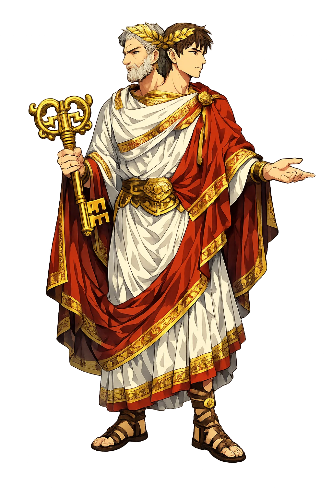
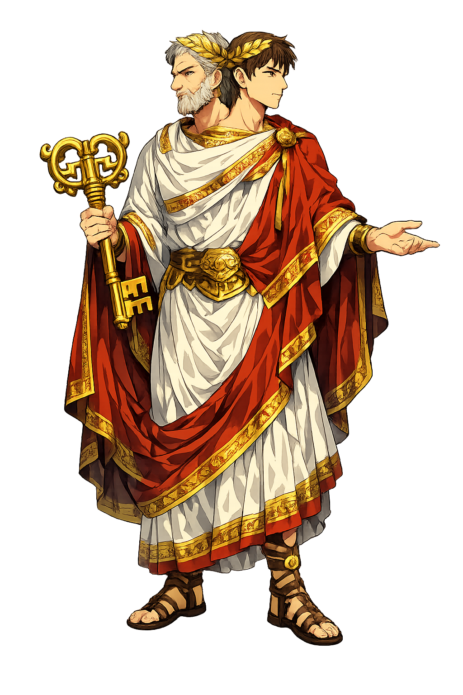

The Authentic Orthography
Beginnings, Doors, Transitions · The God of the Door

Unicode restoration and ASCII comparison
Iānus
The name survives only in scholarly transliteration. Iānus is the standard Roman romanisation, documented in academic sources — “'Passage, arched door' (from ianua)”. Its macron-length vowels preserve distinctions lost in plain ASCII.
The original script for this roman name has not yet been added to PUNICODEX. The form shown is a scholarly transliteration.
ianus
Reduced to plain ianus, the name loses everything that made it specific: macron-length vowels. What remains is an ASCII string that machines can parse but that no longer speaks with its original voice.
Iānus
The Unicode restoration recovers what ASCII flattened. Iānus restores macron-length vowels, returning the name to its original written dignity. The domain encodes to Punycode, but the browser displays the truth.
Iānus.com → xn--inus-qsa.com
The non-ASCII characters in Iānus are encoded while the ASCII remains visible. To the DNS, it is Punycode. To humanity, it is Iānus.
How Iānus is preserved in writing
A bespoke provenance study for Iānus is being prepared by the PUNICODEX scholarly team.
Contribute scholarly provenance →How Iānus was spoken
Beginnings, Gates, and the Two Faces
Iānus has no Greek equivalent and no mythology of adventure: he is Rome's god of passages themselves — doors, bridges, beginnings, the month that opens the year. His two faces look both ways because every threshold faces two worlds.
The Ianus Geminus, open while Rome fought, closed in peace — shut only a handful of times in seven centuries.
The two-faced one: past and future, entrance and exit, watched simultaneously.
Iānuārius — his month still opens the civil year of half the world.
His double face stamped the earliest Roman bronze coinage, with the prow of a ship on the reverse.
Stories of Iānus
Ovid's Fasti gives him the one great scene: the poet asks the two-faced god why he looks both ways, and Iānus answers for himself — the only extended self-explanation any Roman god gets in verse.
Ovid asks Iānus why, alone among gods, he sees both behind and before. The god replies: whatever you see — sky, sea, earth — all things are closed and opened by my hand; I preside over the gates of heaven with the gentle Seasons; I am called Chaos, for I was the ancient confusion out of which order came. Then he teaches the poet why the year begins in winter: the door of the year opens with the sun's rebirth.
Numa, the peace-king, founded the rite: the gates of the Ianus in the Forum stand open while Rome is at war, closed in peace. Livy records that since Numa's day they had been closed only twice — in 235 BCE, in the consulship of Titus Manlius Torquatus, and by Augustus, who boasted of closing them three times — and Nero closed them again after the Armenian settlement. An open temple as the norm: Rome's two faces were usually turned outward, toward war.
Ovid also tells how Iānus wooed the nymph Carna, goddess of hinges, who tricked her suitors into a cave and fled — until the two-faced god, who cannot be crept up on, saw her behind him. Their union gave her power over doorways and the beans-and-bacon rites of June 1: Rome's folklore of thresholds, domestic and divine at once.
Iānus is the god of the door you are standing in. Every beginning contains its end; every entrance is also an exit watched from the other side. He does not judge the passage — he is the passage. To honour him is to pause at thresholds: to look back once, look forward once, and only then walk through.
Enter Extended Lore